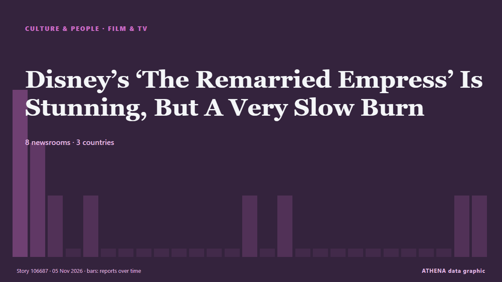

Κινηματογράφος & τηλεόραση
ΧορηγούμενοΠαρουσιάζεται από  Cybernetics and Artificial Intelligence Lab Welcome to the Cybernetics and Artificial Intelligence Laboratory, established at the Department of Business Administration of the National and Kapodistrian University of Athens. The lab is headed by Professor Dimitrios Thomakos. The lab aims to do research that can be published in top venues. Our research uses tools and methods of Artificial Intelligence, and lies in the following areas: - Forecasting - Decision making - Cyber security - Finance We are always looking forward to collaborating with exceptional students!
Cybernetics and Artificial Intelligence Lab Welcome to the Cybernetics and Artificial Intelligence Laboratory, established at the Department of Business Administration of the National and Kapodistrian University of Athens. The lab is headed by Professor Dimitrios Thomakos. The lab aims to do research that can be published in top venues. Our research uses tools and methods of Artificial Intelligence, and lies in the following areas: - Forecasting - Decision making - Cyber security - Finance We are always looking forward to collaborating with exceptional students!
| 23 Οκτ | 0 |
|---|---|
| 24 Οκτ | 0 |
| 25 Οκτ | 0 |
| 26 Οκτ | 0 |
| 27 Οκτ | 1 |
| 28 Οκτ | 0 |
| 29 Οκτ | 0 |
| 30 Οκτ | 1 |
| 31 Οκτ | 1 |
| 1 Νοε | 5 |
| 2 Νοε | 5 |
| 3 Νοε | 6 |
| 4 Νοε | 3 |
| 5 Νοε | 1 |
Οι τίτλοι των ειδήσεων παρουσιάζονται στα αγγλικά, όπως δημοσιεύτηκαν.

Disney’s ‘The Remarried Empress’ Is Stunning, But A Very Slow Burn
This post contains spoilers of Disney+ /Hulu's anticipated Korean drama, The Remarried Empress. από Forbes Business
‘Beef’ Creator Lee Sung Jin Launches Production Company, Plans Ali Wong Limited Series
Hyunji Ward will run Lee's Lila Pictures, which also has a Gene Hong drama series in development. από The Hollywood Reporter
Italian director Tinto Brass dies aged 93
(ANSA) - ROME, 04 NOV - Italian director Tinto Brass died in Rome on Wednesday at the age of 93, his wife Caterina Varzi and his children Bonifacio and Beatrice Brass told ANSA. από ANSA English
Wicker movie review: Olivia Colman, Alexander Skarsgard shine in a strange, wondrous fable
Directed and written by Alex Huston Fischer and Eleanor Wilson, the film stars Olivia Colman and Alexander Skarsgard. από Scroll.in
Spanish-French Drama "La Bola Negra" Wins Feature Film Grand Prix at Cinelibri International Book to Film Festival
La Bola Negra has won the audience award at this year’s London Film Festival. από Deadline
Keira Knightley is ‘utterly mesmeric’, says Black Doves co-star Andrew Buchan
Buchan has reprised his role as Knightley’s on-screen husband in the Netflix thriller. από Evening Standard (London)
After Tusshar Kapoor, Ayushmann Khurrana Gets Extortion Call From 'Lawrence Bishnoi Gang'
Actor Tusshar Kapoor recently received a similar threatening audio message from a caller identifying as 'Harry Boxer'. από NDTV
Cannes to Host First World Quantum Cannes Festival on November 17-18
Insider Brief PRESS RELEASE — Local governments and academic researchers are the driving force behind the World Quantum Cannes Festival, a pioneering event dedicated to quantum technology, taking… από The Quantum Insider
At ‘China’s Hollywood’, Visitors Become Stars as Consumers Spend More on Experiences
Since the experience launched in August, Hengdian World Studios said more than 2,000 people had taken part, with bookings full on most days. από CNA (Channel NewsAsia)
Johnny Depp teases possible return as Jack Sparrow in ‘Pirates of the Caribbean 6’
Johnny Depp is finally sounding off about the possibility of returning as Jack Sparrow in “Pirates of the Caribbean 6.” Speaking to Entertainment Tonight on his “Ebenezer” press tour, the Oscar… από Variety
Cinemark Stock Pops On Record Q3 Revenue
Cinemark, the nation’s third largest exhibitor, saw revenue jump 23% to $1.1 billion for the three months ended in September, its best-ever third quarter amid a broad box office rebound. από Deadline
Kristin Scott Thomas stars in festive John Lewis jaunt with toy dog Pickles
Dame Kristin and Pickles, voiced by Paul Whitehouse, take off on a tuk-tuk ride around London to find a better gift than cash inside a Christmas card. από The Irish News (Belfast)
James Bond actor Ben Whishaw says franchise ‘needs to be reinvented’
The 46-year-old has starred in three James Bond films alongside Daniel Craig as the character of Q. από Evening Standard (London)
Thomas Ong, 57, slips & fractures ankle 10 days into 45-day Japan trip after photographing waterfall
He will let his ankle heal by itself instead of having surgery. από Mothership
'I Play Rocky' tells the underdog story behind the classic underdog film
LOS ANGELES: A young Sylvester Stallone had one non-negotiable demand when he was trying to sell his script about a small-time boxer named Rocky Balboa. από Business Recorder
Newsom’s November Surprise: Boost CA Film & TV Tax Incentives To $1B ASAP, Says Exiting Governor
The day before his successor as California’s governor is elected in the high stakes midterms, Gavin Newsom is going out with a bang. από Deadline
Strictly Come Dancing fans 'absolutely devastated' as spoiler reveals who left
Strictly Come Dancing fans have shared their disappointment after the latest results were leaked online. από WalesOnline
Michael Mann, director of Heat and Collateral, accidentally shoots self at gun range
He sustained a "superficial injury" in the incident. από CNA (Channel NewsAsia)